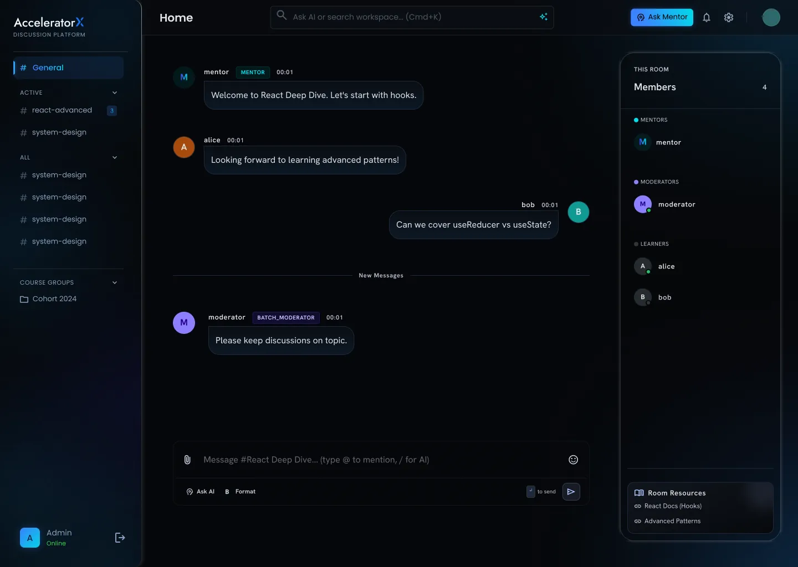
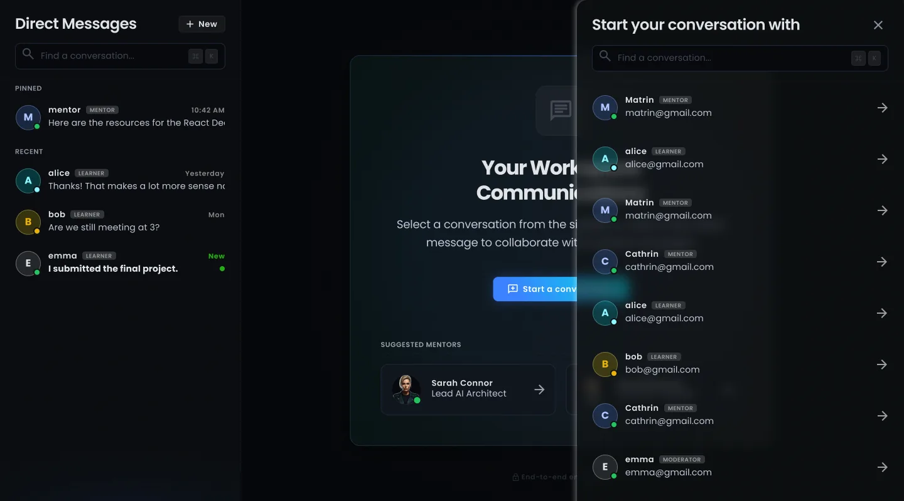
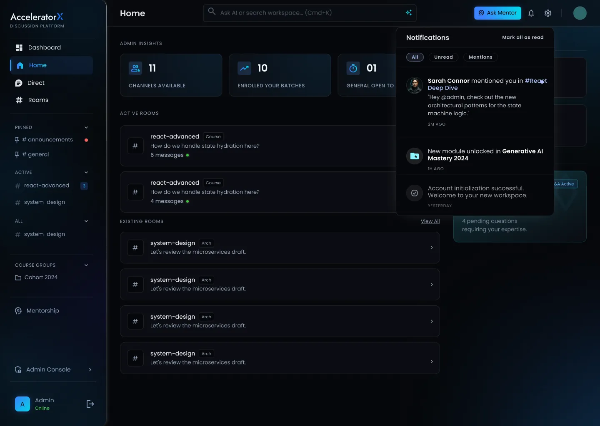
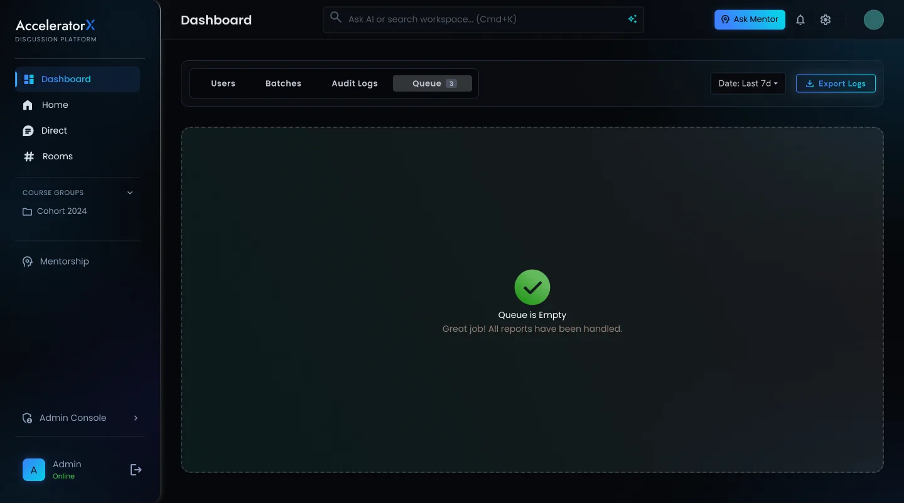

1.
Ask in your batch room
Every batch gets its own room. Questions stay where the whole class can learn from them.

2.
Or message a mentor directly
For anything personal, start a private chat with a mentor in two taps.

3.
Never miss a reply
Mentions and replies land in one place, sorted into Unread and Mentions.

4.
Moderators keep it clean
Reported messages go to a queue. An empty queue means every issue was handled.
